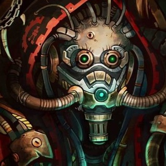

About the Xenarites
The Xenarites are a secretive sect of Tech-priests of the Adeptus Mechanicus that seek to study and make use of xenos technology of the Adeptus Mechanicus (40k wiki) They make their home in the Forge World of Stygies VIII. One of the best-known Xenarites is Tech-Aquisitor Scaevola.
Tech-aquisitor Scaevola
Characteristics of the Xenarites
- They are obsessed with the aquisition of knowledge, particularly Xenos technology
- They are deemed heretical by many of the Inquisition
- Their existence is taboo even within the Mechanicus, and is largely unrecognized in official matters
Tech-aquisitor Scaevola
Scaevola is a tech-aquisitor from Stygies VIII. She is currently in the service of Magos Dominus Faustinius, and is part of his salvage mission to the newly rediscovered world of Silva Tenebris aborad the Ark Mechanicus, the Caestus Metalican. She encourages Faustinius to lead the expedition in plundering the vaults for new discoveries to further her and Stygies VIII's power. (Lexicanum) Other members of the operation include:
- Magos Dominus Faustinius, a surprisingly benevolent leader
- Lector-Dogmatic Videx, of Metalica, seeker of purity through destruction of the Xenos influence and thus an antithesis to Scaevola's Xenarite doctrine
- Subdomina Kephra, a Master of Skitarii, providing a more 'human' outlook as well as a deep concern for th wellbeing of her troops, often a source of dismay from the other Tech-Priests but, notably, respect from Faustinius himself.
{kind=link}
{kind=link}